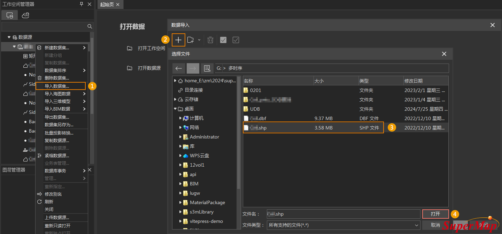
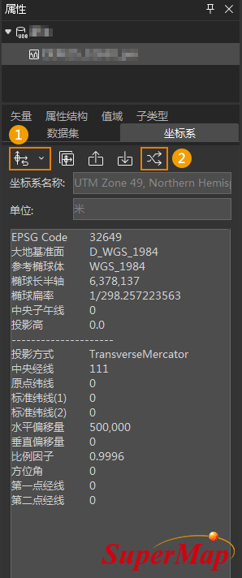
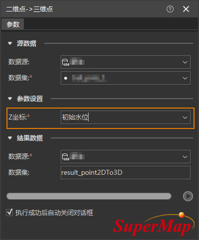
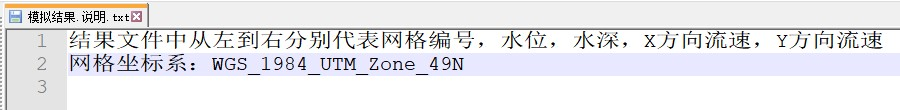
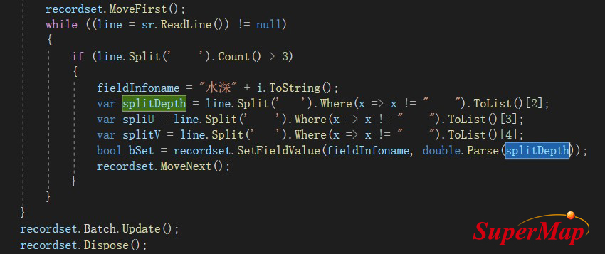
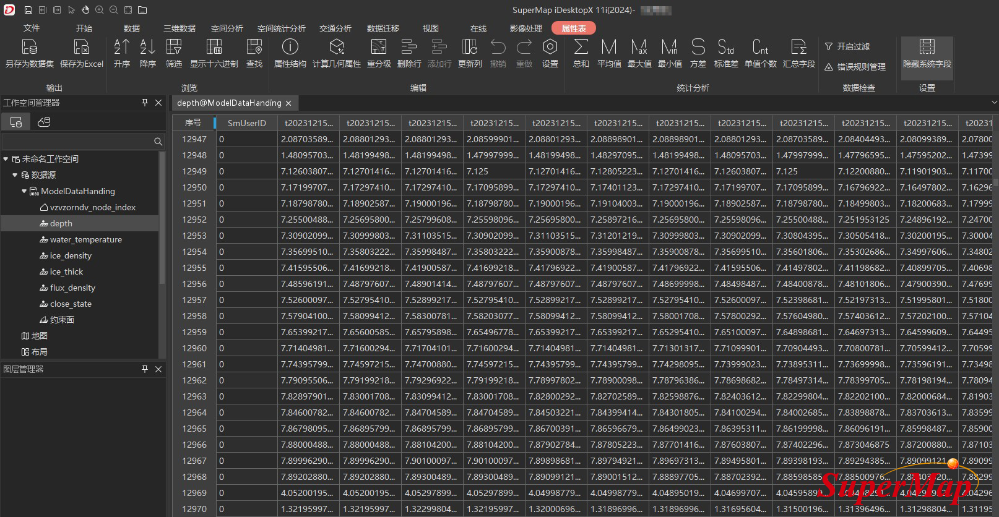
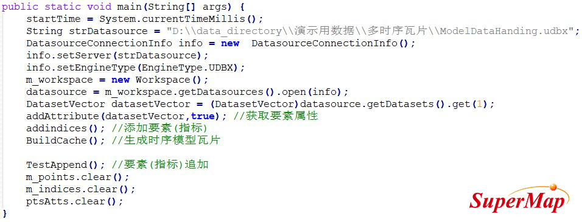
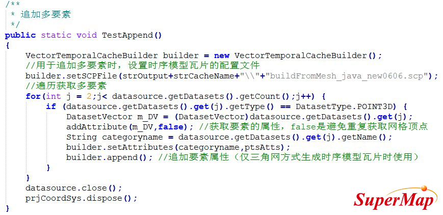

带时间维度的模型数据处理与可视化指南
背景需求
本文档以某项目水动力模型数据为例，介绍如何将带有时间维度的原始数据导入SuperMap iDesktopX，并生成时序模型瓦片，以及如何在SuperMap iClient3D for WebGL/WebGPU中可视化表达时序模型瓦片。
文档将从以下几个方面分别进行说明：
1、软件与数据准备
软件与数据准备章节提供如何准备软件环境和所需数据的要点。
1.1软件配置
- ①生成时序模型瓦片：需要SuperMap iDesktopX或SuperMap iObjectX，本应用示例中分别使用了SuperMap iDesktopX 11.2.0和SuperMap iObject Java 11.2.0版本。
- ②瓦片数据可视化效果展示：需要SuperMap iClient3D for WebGL/WebGPU，本应用示例中使用了SuperMap iClient3D for WebGL/WebGPU 11.2.0版本。
- ③软件下载：超图技术资源中心平台软件 http://support.supermap.com.cn/DownloadCenter/ProductPlatform.aspx。
1.2原始数据准备
基于水动力模型数据输出的中转数据，数据格式包括*.shp、*.xlsx、*.txt、*csv。
2、基于原始数据生成时序模型瓦片
SuperMap GIS支持通过点集+约束面或者三角网+要素两种方式生成时序模型瓦片。目前，通常直接采用SuperMap iDestopX通过点集+约束面方式生成时序模型瓦片。
只能采用SuperMap iObject Java通过三角网+要素方式生成时序模型瓦片，仅该方式支持多要素追加。
2.1点集+约束面方式生成时序模型瓦片
点集+约束面方式生成时序模型瓦片是指基于原始的时序点位数据及约束面数据生成S3M瓦片数据。如果原始数据包含点数据和约束面数据，可以将点和面数据导入SuperMap iDesktopX后，直接进行瓦片生成操作。
如果与本应用示例数据一样，原始数据只有约束面数据，可以按照以下操作方法先从面数据中提取点数据，再进行瓦片生成操作。建议根据具体数据情况合理进行操作。
2.1.1点位数据处理
该流程是通过数据导入、坐标设定、类型转换等相关功能，将*.shp格式的原始点位数据导入SuperMap iDesktopX，并转成三维点数据集。具体操作步骤如下：
- 1.原始数据导入UDB：
（1）打开SuperMap iDesktopX，新建或打开数据源；
（2）鼠标右键单击数据源，在弹出的右键菜单中选择导入数据集命令；
（3）在弹出的数据导入对话框中，点击添加文件按钮，如下图所示，找到*.shp格式的矢量面数据文件；
（4）点击打开按钮，即可将数据导入软件，得到矢量面数据集。

图2-1导入数据集功能示例
- 2.矢量面坐标系调整：
通常由于没有对应的坐标系文件，矢量面数据集的坐标系是平面无投影的，这时可以通过配套的地形数据或已知坐标信息来确定数据坐标系，再通过重新设定坐标系和投影转换功能实现坐标系调整。
这里以示例数据为例说明如何调整矢量面数据集坐标系，具体操作步骤如下：
（1）通过数据源右键菜单的导入数据集命令导入dem地形数据，并且根据示例数据配套的矩形区域_任务范围.kml文件可以确定示例数据的坐标为EPSG Code 4326；
（2）鼠标右键单击矢量面数据集，在弹出的菜单栏中选择属性命令，在弹出的属性面板中，选择坐标系模块；
（3）点击重新设定坐标系按钮，在弹出的坐标系设置对话框中，将矢量面坐标系设置为EPSG Code 32649；
（4）点击投影转换按钮，在弹出的数据集投影转换对话框中，将数据的坐标系投影转换为EPSG Code 4326。

图2-2坐标系调整示例
- 3.矢量面数据集转点数据集： 由于本应用示例数据没有点数据，因此，首先需要通过面转点操作，将矢量面数据集转换为二维点数据集。以下为面转点操作具体步骤： （1）单击数据选项卡->类型转换下拉按钮->面转点功能，弹出的面数据->点数据集对话框。 （2）选择上一步得到的矢量面数据集为源数据，内点选择参数设置为子对象内点。设置完成后，单击运行即可执行数据转换。

图2-3面转点操作示例
- 4.将二维点数据集转成三维点数据集：该步骤通过二维点转三维点操作，将上一步骤得到的二维点数据集转换为三维点数据集，Z坐标需要选择具有高度信息的属性字段，本应用示例数据选择了初始水位。
图2-4二维点转三维点操作示例
2.1.2写入点位多时刻水深属性
该流程主要将点数据中多时刻的属性信息写入三维点数据集属性表中。这里是将示例点数据中多时刻的水深信息写入三维点数据集的属性表中。具体操作步骤如下：
- 1.使用组件代码，将“水深”信息写入三维点数据集的属性表：
首先确定同一点位不同时刻的高度信息来源。
例如，示例原始数据中的“模拟结果.txt”文件存储了同一个点位上多时刻的水深信息，并且上一流程得到的三维点数据集属性中的“单元编号”和“模拟结果.txt”文件中“网格编号”是一一对应的。
因此，可以通过组件代码，将“水深”信息写入三维点数据集的属性表中。

图2-5多时刻水深信息示例
-
2.使用DatasetVector.FieldInfos创建不同时刻水深的属性字段：根据数据的时刻数，通过DatasetVector.FieldInfos创建不同时刻水深的属性字段。关键代码如下图所示。

图2-6通过组件接口创建属性字段的关键代码示例

图2-7创建属性字段结果示例
- 3.矢量面数据集转点数据集： 由于本应用示例数据没有点数据，因此，首先需要通过面转点操作，将矢量面数据集转换为二维点数据集。以下为面转点操作具体步骤： （1）单击数据选项卡->类型转换下拉按钮->面转点功能，弹出的面数据->点数据集对话框。 （2）选择上一步得到的矢量面数据集为源数据，内点选择参数设置为子对象内点。设置完成后，单击运行即可执行数据转换。
- 3.将“模拟结果.txt”文件中的水深值，写入属性表：通过Recordset.SetFieldValue(string name, object
value)将“模拟结果.txt”文件中的水深值，写入对应的点位和水深字段里。关键代码如下图所示。

图2-8水深值写入对应属性字段中的关键代码示例

图2-9水深值写入结果示例
- 4.更新“水深1”的字段值：通过更新列操作为初始时刻的属性值统一赋值。这里将水深1的字段值统一更新为0，以表达初始水位高度。

图2-10初始水位统一赋值示例
注意：
（1）当“模拟结果.txt”里没有点的位置信息时，可以通过上述方法，借助组件代码将“水深”信息导入点数据集。
（2）如果“模拟结果.txt”记录了点的位置信息，可以直接将其导入成点数据集，并通过追加列的方式将不同时刻的水深值储存到属性表中。
2.1.3生成时序模型瓦片
-
1.提取淹没区域的范围：为表示淹没区域范围（即约束面），这里需要将2.1.1中得到的矢量面数据集加载到地图窗口中，并选中所有面对象，单击鼠标右键，在弹出的右键菜单中选择合并”命令，将多个面对象合并为一个面对象。如果原始数据本身具有约束面数据可以不进行该操作。

图2-11合并面对象示例
- 2.瓦片生成操作：
（1）单击三维数据选项卡->瓦片组->生成瓦片下拉按钮->点集生成时序模型瓦片功能，弹出点数据集生成时序模型瓦片对话框；
（2）点数据集设置：选择属性表中存有不同时刻点高度等信息的点数据集。这里选择2.1.2中得到带有不同时刻水深属性的三维点数据集；
（3）裁剪数据集设置：选择约束面数据集。这里选择上一步骤得到的面数据集；
（4）参数设置：设置线程数、瓦片名称、瓦片路径以及时序字段等参数。其中，时序字段需要选择存有点高度位置信息的属性字段作为时序字段，类型为双精度。这里选择了所有水深字段；
（5）设置完成后，单击运行即可执行瓦片生成操作。

图2-12点数据集生成时序模型瓦片示例
注意：
（1）由于原始数据的范围是不规则的，所以生成时序模型瓦片时需要指定瓦片范围进行约束。
（2）生成时序模型瓦片时，必须勾选必要的时序字段。
2.2 三角网+要素方式生成时序模型瓦片
该流程首先详细说明了包含矢量数据集的已有数据源的数据组成及操作，然后基于SuperMap iObject Java 11.2.0实现了时序模型瓦片生成和多要素追加。具体操作步骤如下：
2.2.1数据组成说明
如果原始数据为NC三角网数据，需要通过自定义开发将NC数据转换为面数据集，并建议将三角网中的点及单个要素信息（例如水深、水温等）存储为单个三维点数据集。
- 1.三角网数据：通过自定义开发在SuperMap iDesktopX中打开解析后的NC三角网数据，并将构成三角网的每个面的结点ID按照顺时针或逆时针方向存入指定字段中。
如下图所示的三角面的结点ID分别为28（t1：第一个结点）、43（t2：第二个结点）、42（t3：第三个结点）。

图2-13三角网数据说明示例
- 2.三维点数据集：通过自定义开发工具将组成三角网的各结点输出成三维点数据，每个点数据集具有相同的点位置信息，但具有不同的属性要素信息，例如水温、水深等。

图2-14三维点数据集示例
- 3.depth数据集：通过相关操作后，多时序要素值将被存到点的属性表中。如下图“depth”点数据里不同的字段名表达不同的时序，具体字段值表达该时刻的具体水深。

图2-15depth数据集属性表示例
2.2.2生成时序模型瓦片
该流程主要介绍如何使用11.2.0及更高版本的SuperMap iObject Java生成时序模型瓦片。主要操作步骤及关键代码如下：
- 1.获取点数据集：通过如下所示代码打开数据源，获取第一个存有属性要素信息的点数据集。

图2-16获取点数据集关键代码示例
- 2.获取要素属性：通过如下所示代码获取第一个属性要素。

图2-17获取要素属性关键代码示例
- 3.获取时序名称集合：通过如下代码获取当前属性要素里的时序名称集合。

图2-18获取当前要素里的时序名称集合关键代码示例
- 4.获取面数据集：通过如下代码从原始数据中获取三角网（即面数据集）。

图2-19获取面数据集关键代码示例
- 5.生成时序模型瓦片：通过以下代码生成时序模型瓦片（关联接口：VectorTemporalCacheBuilder）。

图2-20生成时序模型瓦片关键代码示例
- 6.追加多要素：通过以下代码实现多要素追加。

图2-21追加多要素关键代码示例
- 7.时序模型瓦片文件示例

图2-22时序模型瓦片数据结果示例
3、服务发布及Web端数据可视化
3.1保存工作空间
在SuperMap iDesktopX，将章节2中得到的时序模型瓦片数据添加到场景中，并保存场景和工作空间。
3.2发布三维服务
SuperMap iServer将上一步骤得到的工作空间发布为三维服务，具体操作见SuperMap iServer帮助文档。
3.3可视化表达
通过代码在SuperMap iClient3D for WebGL/WebGPU加载上一步发布的三维服务，并采用分层设色的方式进行数据的可视化表达。主要参考代码如下：
promise.then(function (layers) {
layer = layers[0];
updateLayerHyp(layer);
layer.temporalSetting = new SuperMap3D.TemporalSetting();
layer.temporalSetting.location = 0;
layer.temporalSetting.changeZValue = true;
layer.minTransparentAlpha = 1;
// 更新图层分层设色函数
function updateLayerHyp(layer, colorIndex = 0, step = 24) { // step 颜色表插入的总数
// 图层上的时间总数，11.11 temporalCount,主版本外挂-图层上的时间总数 _temporalInfo
let temporalInfo = layer._temporalInfo;
temporalCount = temporalInfo.length > 0 ? temporalInfo[colorIndex].count : layer.temporalCount;
let minValue = layer._hypMinCategory;
let maxValue = layer._hypMaxCategory;
let hyp = new SuperMap3D.HypsometricSetting();
hyp.ColorTable = createColorTable();
hyp.DisplayMode = SuperMap3D.HypsometricSettingEnum.DisplayMode.FACE;
hyp.Opacity = 1.0;
hyp.LineInterval = 1.0;
hyp.ColorTableMaxKey = maxValue;
hyp.ColorTableMinKey = minValue;
//设置非法值颜色
hyp.noValueColor = new SuperMap3D.Color(1.0, 0.0, 0.0, 1);
hyp.MaxVisibleValue = maxValue;
hyp.MinVisibleValue = minValue;
hyp.filterMode = SuperMap3D.HypsometricSettingEnum.FilterMode.NEAREST;
layer.hypsometricSetting = {
hypsometricSetting: hyp,
analysisMode: SuperMap3D.HypsometricSettingEnum.AnalysisRegionMode.ARM_ALL,
};
}
// 创建颜色表
function createColorTable(keys, colors, alphas) {
let colorTable = new SuperMap3D.ColorTable();
colorTable.insert(0.0, SuperMap3D.Color.fromCssColorString("#00A2FF").withAlpha(0));
colorTable.insert(0.01, SuperMap3D.Color.fromCssColorString("#0082FF").withAlpha(0.3));
colorTable.insert(0.05, SuperMap3D.Color.fromCssColorString("#008CFF").withAlpha(0.50));
colorTable.insert(0.1, SuperMap3D.Color.fromCssColorString("#0096FF").withAlpha(0.70));
colorTable.insert(0.15, SuperMap3D.Color.fromCssColorString("#0096FF").withAlpha(0.70));
colorTable.insert(0.30, SuperMap3D.Color.fromCssColorString("#00B9FF").withAlpha(0.70));
colorTable.insert(0.40, SuperMap3D.Color.fromCssColorString("#00C4FF").withAlpha(0.70));
colorTable.insert(0.48, SuperMap3D.Color.fromCssColorString("#00A0FF").withAlpha(0.80));
colorTable.insert(0.56, SuperMap3D.Color.fromCssColorString("#9AFF00").withAlpha(0.80));
colorTable.insert(0.60, SuperMap3D.Color.fromCssColorString("#00FF8C").withAlpha(0.80));
colorTable.insert(0.64, SuperMap3D.Color.fromCssColorString("#FFC400").withAlpha(0.80));
colorTable.insert(0.72, SuperMap3D.Color.fromCssColorString("#FF7B00").withAlpha(0.80));
colorTable.insert(0.80, SuperMap3D.Color.fromCssColorString("#0089FF").withAlpha(0.80));
colorTable.insert(0.88, SuperMap3D.Color.fromCssColorString("#0089FF").withAlpha(0.80));
colorTable.insert(0.96, SuperMap3D.Color.fromCssColorString("#005CE6").withAlpha(0.80));
colorTable.insert(1.04, SuperMap3D.Color.fromCssColorString("#005CE6").withAlpha(0.88));
colorTable.insert(1.12, SuperMap3D.Color.fromCssColorString("#005CE6").withAlpha(0.90));
colorTable.insert(1.20, SuperMap3D.Color.fromCssColorString("#005CE6").withAlpha(0.90));
colorTable.insert(1.28, SuperMap3D.Color.fromCssColorString("#005CE6").withAlpha(0.90));
colorTable.insert(1.36, SuperMap3D.Color.fromCssColorString("#005CE6").withAlpha(0.90));
colorTable.insert(1.44, SuperMap3D.Color.fromCssColorString("#005CE6").withAlpha(0.90));
colorTable.insert(1.52, SuperMap3D.Color.fromCssColorString("#005CE6").withAlpha(0.90));
colorTable.insert(1.61, SuperMap3D.Color.fromCssColorString("#005CE6").withAlpha(0.90));
colorTable.insert(10.97198486328125, SuperMap3D.Color.fromCssColorString("#005CE6").withAlpha(1.0));
return colorTable
}
3.4多时序模型瓦片加载效果
v11i(2024)正式版产品包里我们提供了多时序多要素水场范例可以参考

图2-23Web端加载多时序模型瓦片效果示例
注意：
（1）如果只在SuperMap iClient3D for WebGL/WebGPU 11.1.1中实现数据可视化，建议使用SuperMap iDesktopX 11.1.1生成时序模型瓦片。
（2）如果在SuperMap iClient3D for WebGL/WebGPU 11.2.0及以上版本中实现数据可视化， SuperMap iDesktopX的版本不受限制。